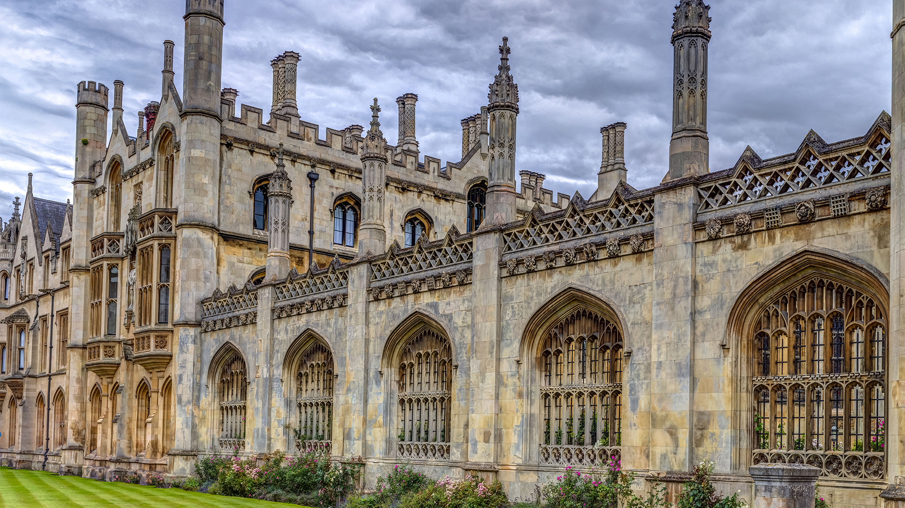
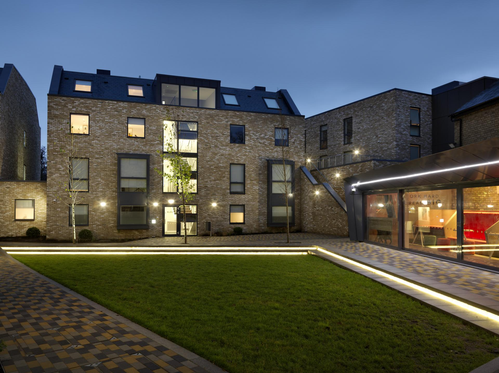
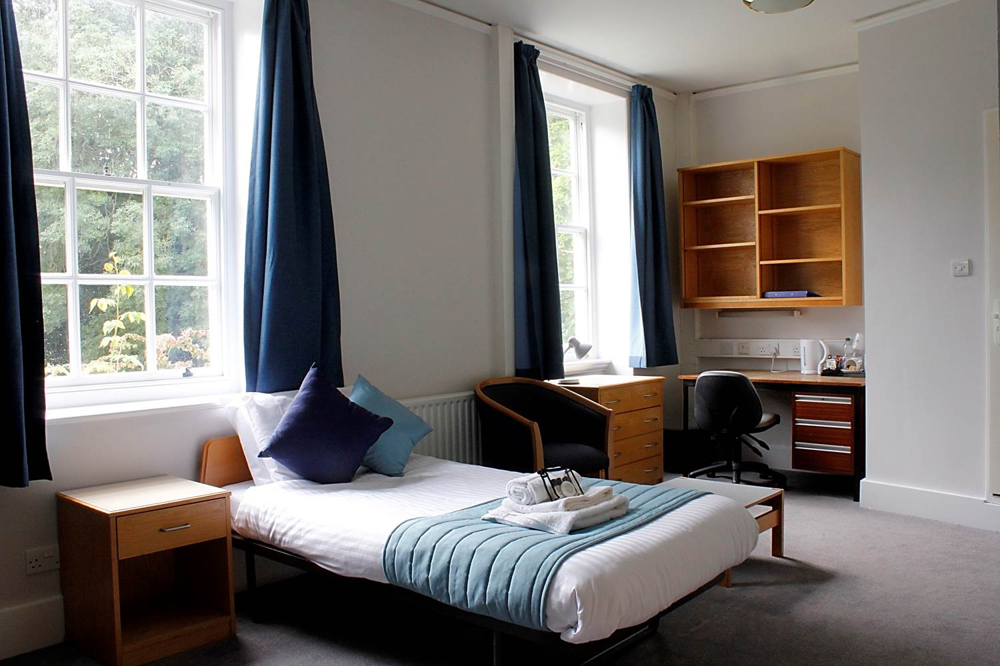
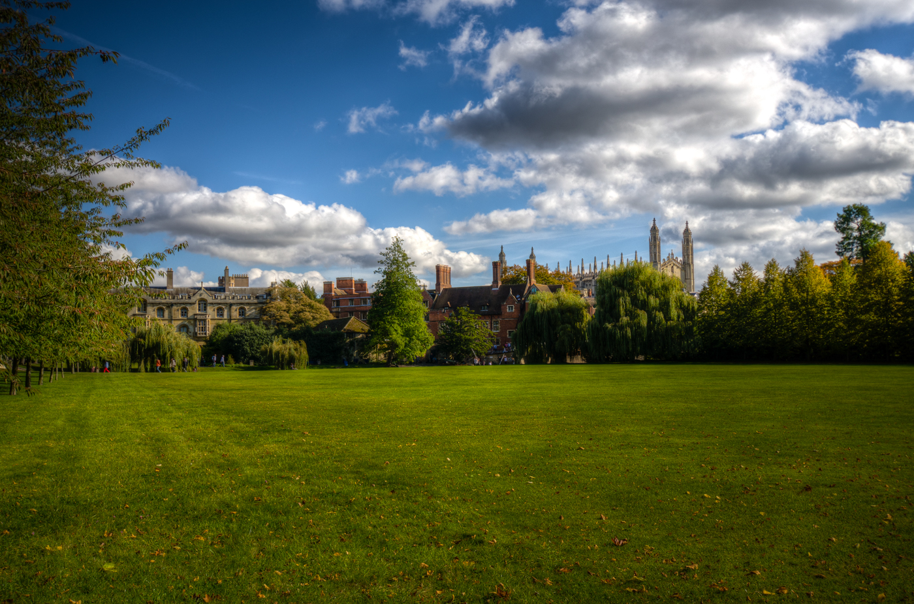

Федеральное государственное бюджетное образовательное учреждение высшего образования
Об университете
Бриф: о вузе

Федеральное государственное автономное образовательное учреждение высшего образования МИТМ - "Мифический институт твоей мечты" – первый университет на Урале, один из учредителей Ассоциации классических университетов России и Ассоциации ведущих университетов России.
Университет также известен как Пермский университет, что зафиксировано документально в 2016 году. Традиционно Пермский университет называют «классическим», а также ПГУ. Долгое время университет носил приставку «им. А.М. Горького»: памятник писателю до сих пор находится перед самым старым корпусом университета.
В 2006 году университет стал победителем конкурса в рамках приоритетного национального проекта «Образование», в 2010 году ему присвоен статус национального исследовательского университета. Пермский университет сохраняет и укрепляет статус одного из центров интеллектуальной и духовной жизни страны, занимая достойное место среди ведущих университетов России.
Университетский городок
Кампус Пермского государственного национального исследовательского университета (ПГНИУ) напоминает небольшой европейский городок. На пересечении двух уютных улиц удобно разместились центральный сквер с фонтаном, башня с часами, площадь, ботанический сад, музеи, учебные аудитории, библиотеки и дворец культуры. Недаром кампус часто называют городом в городе и даже маленьким государством. Есть у него и своя, почти вековая история.

В настоящий момент обучение студентов в Пермском университете происходит в 13 учебных и учебно-лабораторных корпусах, в которых расположены 150 аудиторий и 141 лаборатория.
Во многих корпусах студгородка находятся музеи. Их в Пермском университете – 9 – Музей зоологии позвоночных и Музей зоологии беспозвоночных, Музей истории ПГНИУ и Ботанический музей, Минералогический музей, Музей юстиции и Музей палеонтологии и исторической геологии, Музей динамической геологии и Музей пермской системы.
Ежегодно более 17 тыс. читателей пользуются библиотекой университета. В разных корпусах студенческого городка для них работают 9 читальных залов на 560 мест и 5 абонементов. Сегодня библиотека располагает фондом хранения более 1,4 млн. единиц учебной, научной, художественной и периодической литературы, как на русском, так и на иностранных языках.

Через систему компьютерных классов ПГУ (57 классов, более 1000 мест) студенты имеют возможность работать во всемирной сети интернет. На территории кампуса возможен и беспроводной доступ как во внутреннюю, так и во внешнюю сеть.
У Пермского университета имеется 7 общежитий, два из которых расположены в кампусе, остальные пять – в непосредственной близости от него. На территории студгородка есть и спортивный корпус, где проходят занятия по баскетболу, тяжелой атлетике, пауэрлифтингу, аэробике, самбо. На лыжной базе университета (в лесопарковой зоне Перми) студенты занимаются легкой атлетикой, футболом, лыжными гонками.
Благодаря развитой внутренней инфраструктуре, студенческий городок университета – максимально комфортное место для обучения, спортивного и творческого развития студентов.
Национальный исследовательский университет
Программа развития Пермского государственного университета как Национального исследовательского университета называется «Рациональное природопользование: технологии прогнозирования и управления природными и социально-экономическими системами». Программа направлена на создание системы подготовки кадров, генерацию новых знаний и технологий, инновационную деятельность для реализации приоритетного направления развития науки, технологий и техники «Рациональное природопользование», входящего в перечень, утвержденный Президентом РФ в 2006 г. В рамках этого приоритетного направления Программа сосредоточена на вопросах технологий прогнозирования и управления природными и социально-экономическими системами, по которым Университет находится на лидирующих позициях в Российской Федерации.
Экологическая политика
Пермский государственный университет модернизирует свою научную, учебную и хозяйственную деятельность на основе принципов устойчивого развития, разработки и внедрения инноваций рационального природопользования.

Программа развития Пермского государственного университета как Национального исследовательского университета направлена на создание системы подготовки кадров, генерацию новых знаний и технологий, инновационную деятельность для реализации приоритетного направления развития науки, технологий и техники «Рациональное природопользование». Реализация программы происходит в рамках инфраструктурных проектов и 4 научно-образовательных комплексов: «Технологии изучения, освоения, прогнозирования и управления георесурсами и геосистемами>>; («Моделирование и управление физическими и химическими процессами, развитие технологий>>; («Наукоёмкие технологии управления живыми системами»; «Прогнозирование и управление процессами социально-экономического развития стран и территорий на основе современных информационных технологий>>. Деятельность научнообразовательных комплексов учитывает экологические аспекты инноваций, технологий, научно-технического прогресса.
Для выполнения инфраструктурного проекта экологического развития университета создается научно-инновационный комплекс для содействия внедрению технологий прогнозирования и управления природными и социальноэкономическими системами.
Пермский университет развивает экологические показатели для того, чтобы оценить свой текущий и будущий уровень работы по охране окружающей среды.
Это позволит определить эффективность работы по сравнению с другими вузами на федеральном и международном уровнях.
Антикоррупционная деятельность
Противодействие коррупции является одной из приоритетных задач политики Мифического Института твоей мечты и важнейшим направлением его деятельности, которым отводится центральное место в реализации антикоррупционного законодательства и обеспечении его неукоснительного соблюдения в РФ.
Наши студенты являются опорой политики МИТМ: они создают различные антикоррупционные проекты и принимают в них активное участие.
В управлении МИТМ проводится планомерная работа по предупреждению коррупции, предотвращению конфликтов интересов.
Подробнее